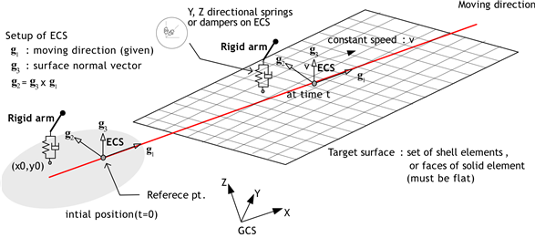
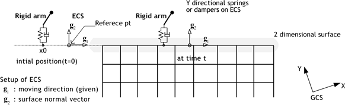

4.10 MovingSpring
The MovingSpring element simulates a moving spring (a combination of spring and damper) rolling on a line or surface defined by beam elements.
 Fig. 4.9-1. MovingSpring Element on a Line Composed of Beams
Fig. 4.9-1. MovingSpring Element on a Line Composed of Beams

Fig. 4.9-2. MovingSpring Element on a 3D Surface
Fig. 4.9-3. MovingSpring Element on a 2D SurfaceNotes
- When performing dynamic analysis, a preliminary static analysis considering self-weight must be conducted first.
- To activate the MovingSpring element, the speed must be defined using
*State, Type=MovingSpringSpeed. - If damping is considered, the overall stiffness matrix will become an asymmetric matrix.
Example
*Elset, Name=rail
Beam
*SECTION, Type=MCK, Name=PM
Mass, 5750
*SECTION, Type=MovingSpring, Name=MS
rail
Spring, Y, 1595E3
Damper, Y, 1000E3
*Element, Type=PointMass, Elset=PM
1000, 1000, S=PM
*Element, Type=MovingSpring, Elset=MS
1001, 1000, S=MS
*Distribution, Type=MovingSpringInitialPosition
1001, 0.0, 0.0
*Load, Type=Gravity, Name=SelfWeight
1000,0,-9.81, 0.
*STEP, Type=Static Name=S
*Activate, Type=Element
Beam, PM, MS
*Activate, Type=Constraint
BC
*Activate, Type=Load
SelfWeight
*STEP, Type=Dynamic Name=Dyn, Prev=S
, 0.02, 2.
*State, Type=MovingSpringSpeed
MS, 27.78
4.10.2 *Element, Type=MovingSpring
*Element, Type=MovingSpring, Elset=elset
id, n1{, S=section, P=x,y}
...
First data line and subsequent data lines
- P=x,y: Initial position relative to the reference point. Defined in the ECS. When targeting beam elements, the
yvalue is ignored.
Specifications
- No. of nodes: 1
- No. of integration points: 1
- Fields: SF=[...], SE=[...], DF=[...], DE=[...] at the element center.
- Compatible section: MovingSpring
- Active DOFs: Can include Y and Z depending on the definition.
Refer to *Element, Type=Spring for explanations of SF, SE, DF, and DE.
4.10.3 *Section, Type=MovingSpring
Defines the properties for a MovingSpring.
*Section, Type=MovingSpring, Name=name
surface, refx, refy, refz, g1x, g1y, g1z, xRigid, yRigid, zRigid
Spring, oneDof, coef|material
...
Damper, oneDof, coef|material
...
UnitSystem, force-length-time
*Section, Type=MovingSpring, Name=name
line, xRigid, yRigid, zRigid
Spring, oneDof, coef|material
...
Damper, oneDof, coef|material
...
UnitSystem, force-length-time
First data line for Line
- line: Target beam elset ... The beams should be connected.
- xRigid, yRigid, zRigid: Position vector from the reference node (rigid arm vector).
x1is required, others are optional.
First data line for Surface
- surface: Target surface (required).
- refx, refy, refz: Reference point (optional; default: 0, 0, 0).
- g1x, g1y, g1z: Direction of travel (1, 0, 0).
- xRigid, yRigid, zRigid: Position vector from the reference node (rigid arm vector) (optional; default: 0, 0, 0).
Second and subsequent data line if necessary
- Spring|Damper: Spring or damper
- oneDof: Degree of freedom to which the spring/damper is applied; one of X, Y, Z, RX, RY, or RZ
- coef: Spring or damping coefficient
- material: Reference material model used instead of the spring or damping coefficient. Must support uniaxial material behavior
- referenceUnitSysem: Reference unit system of the material model, used when a material is specified. Optional; defaults to the current unit system. Should be specified in the first data line starting with Spring or Damper
Second and subsequent data line starting with Spring
- oneDof: Degree of freedom to which the spring is applied; one of Y and Z
- coef: Spring coefficient
- material: Reference material model used instead of the spring coefficient. Must support uniaxial material behavior
Second and subsequent data line starting with Damper
- oneDof: Degree of freedom to which the dmaper is applied; one of Y and Z
- coef: Damping coefficient
- material: Reference material model used instead of the damping coefficient. Must support uniaxial material behavior
Optional single UnitSystem data line after second data line
- force-length-time: The local unit system applied to this section. force must be one of N, kN, kgf, tonf, lbf, or kip; length must be one of m, cm, mm, km, in, ft, yd, or mi; and time must be one of s, min, hr, or day.
Spring, Damper, Mass, and UnitSystem may be defined in any order, and Spring and Damper may be used multiple times depending on the DOF to which they are applied.
Spring or damping coefficients are generally defined as numerical values. However, when nonlinear behavior is to be represented, they may be defined by referencing a material that supports a uniaxial material model. For example, if a uniaxial material model is assigned to a Spring in the X direction, the stress–strain relation of that material is interpreted as a generalized force–displacement relation in the Y direction.
- localUnitSystem is optional and is specified in the form of force-length-time, such as kN-mm-s. The force unit shall be one of N, kN, kgf, tonf, lbf, and kip; the length unit shall be one of m, cm, mm, km, in, ft, yd, and mi; and the time unit shall be one of s, min, hr, and day.
- If localUnitSystem is specified and a global UnitSystem is available, the section input is interpreted through the local-to-global relationship.
- If localUnitSystem is specified while no global UnitSystem is currently defined, it is preserved as local metadata and does not cause an input-time error.
- If localUnitSystem is not specified, the input for this Section follows the global UnitSystem defined by
*Environment, Type=UnitSystemwhen one exists. - localUnitSystem defines the unit system for coef or material used in this Section.
- If localUnitSystem is identical to the global UnitSystem, the input values are used directly without any additional scaling. If the two unit systems are different, appropriate unit conversion is performed internally. For example, if the global UnitSystem is kN-m-s and the localUnitSystem is kN-mm-s, and a material model is used for a Spring in the X direction, the displacement is converted from the m basis to the mm basis before evaluating the material model, and the generalized force computed by the material model is then converted back to the global UnitSystem and used in the analysis.
Example
*SECTION, Type=MovingSpring, Name=MSx
rail
Spring, Y, 1595E3
Damper, Y, 1000E3
*SECTION, Type=MovingSpring, Name=MS
rail
UnitSystem, kN-mm-s
Spring, Y, 1595E3
Damper, Y, 1000E3